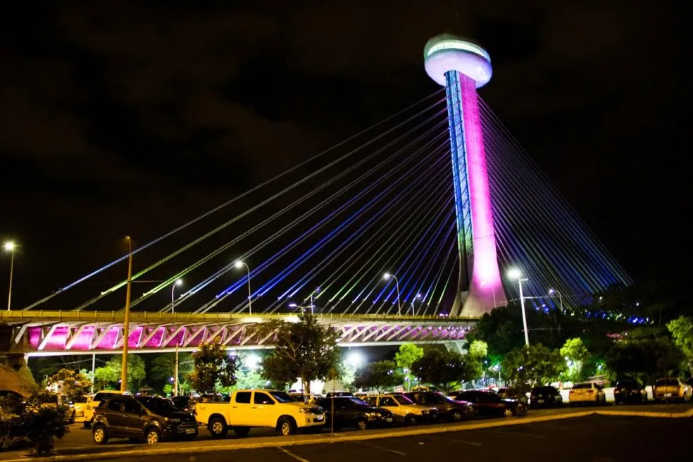
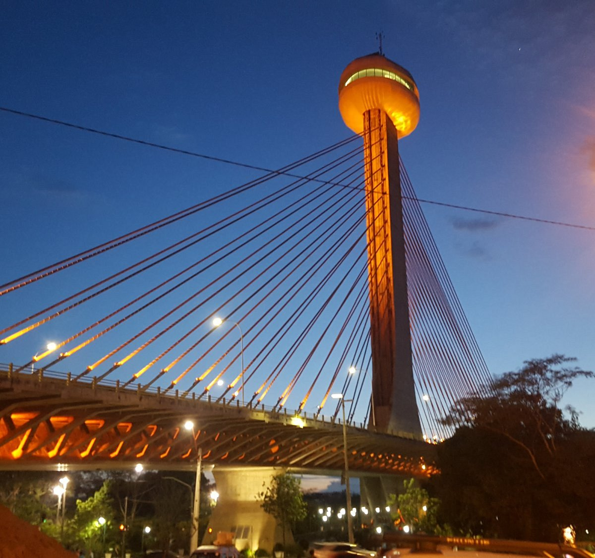
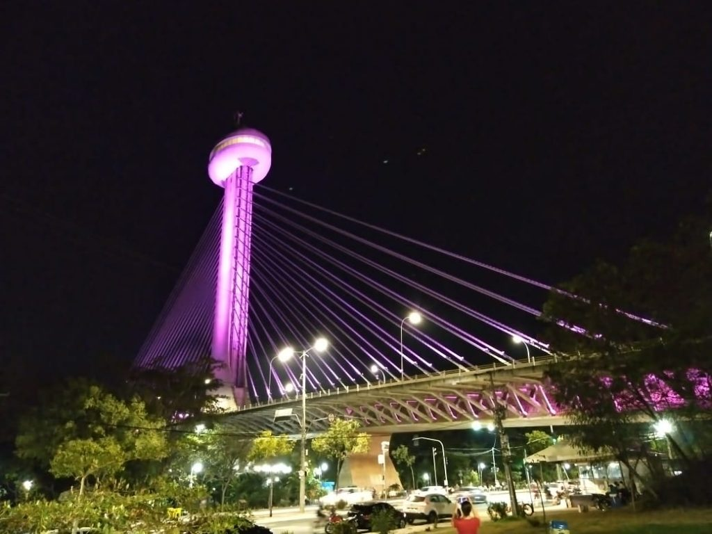

PONTE ESTAIADA



Inaugurada em março de 2010, é um dos mais importantes pontos turísticos da capital piauiense. Sobre o Rio Poti, a ponte facilita o deslocamento entre as regiões central e leste da cidade. O Mirante fica no topo do único mastro central onde os estaios são sustentados.